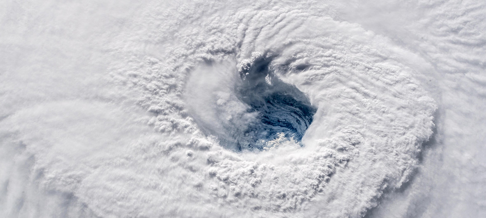
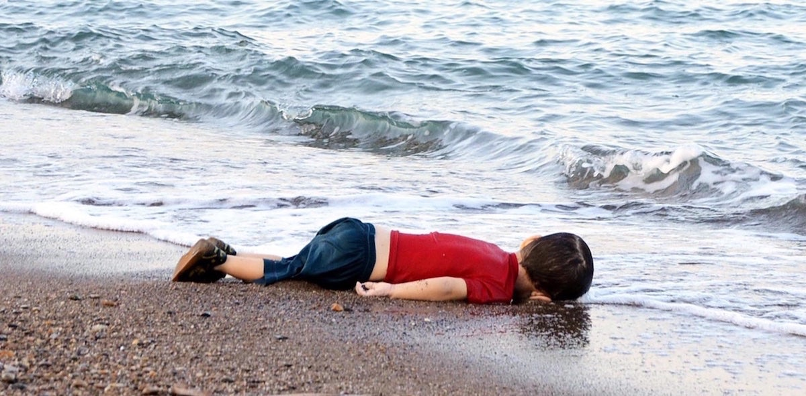

Introduction
is a country in Western Asia, bordering Lebanon to the southwest,
the Mediterranean Sea to the west,
Turkey to the north, Iraq to the east,
Jordan to the south, and Israel to the southwest.
A country of fertile plains, high mountains, and deserts.
Favorite Spots and Landmarks
- Umayyad Mosque
- Site of Palmyra
- Aleppo Citadel
- Souq al-Hamidiyyeh
- Saint Simon Citadel
- Al Azem Palace
- Mount Qasioun
- House of Saint Ananias
- Sayyidah Ruqayya Mosque
- Busra Coliseum
- Mausoleum of Saladin
Best Places to eat
- Naranj
- Bakdash
- Al Halabi
- Haretna
- Al Khawali Restaurant
Weather
In Syria, the climate is Mediterranean on the coast, with mild, rainy winters and hot, sunny summers, while it is arid subtropical in the vast inland areas, with moderately cold winters and scorching, sunny summers.
Festivals
- April Flower Show in Latakia
- Desert Folk Festival in Palmyra
- Cotton Festival in Aleppo
- International Flower Festival in Damascus
- Folklore and Music Festival in Bosra
- Film and Theatre Festival in Damascus
Funny but sad Stuff
The Syrian conflict has created the largest wave of refugees to hit Europe since World War II.